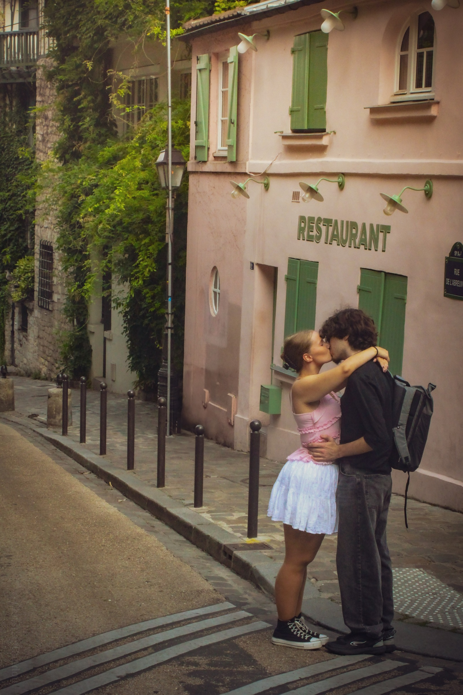
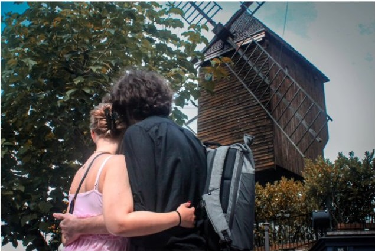
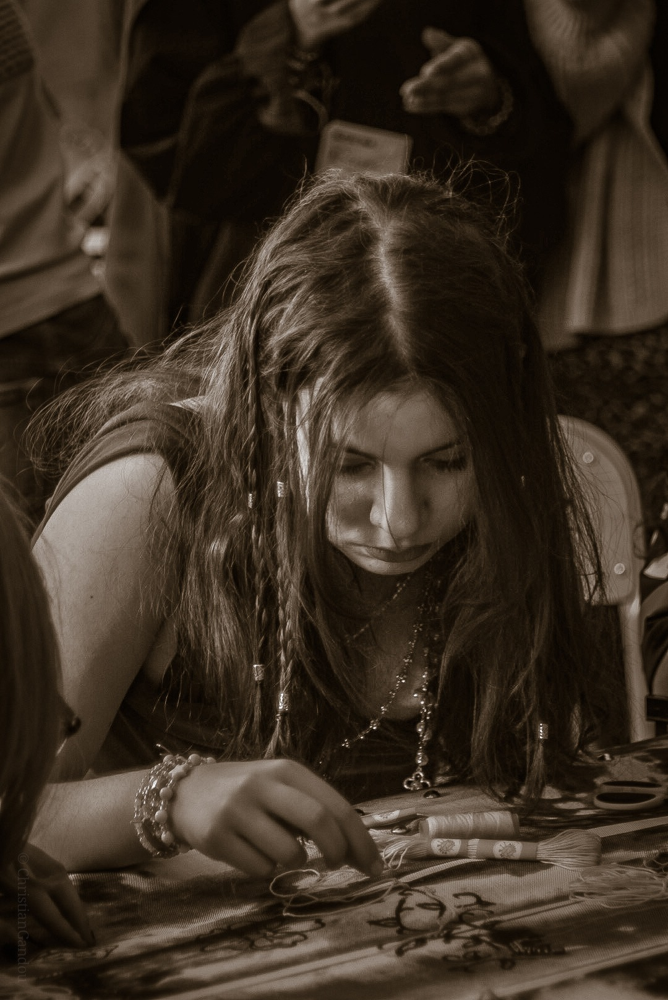

“Isoler des détails ou bien capturer dans toute sa grandeur, l’architecture est un sujet rempli d’histoire et de culture.”
J’aime en capturer pour toujours garder une trace des pays où j’ai mit les pieds. Lignes de fuite, façades historiques
et détails de pierre : l’architecture raconte une ville autant qu’elle la structure.
“Retranscrire le sentiment de l’amour dans une image est un défi mais aussi un plaisir.”
Préparation de l’itinéraire de la journée (différents spots) et direction discrète des sujets : je guide le cadre
plutôt que la pose, pour laisser venir les gestes et la complicité.

Direction des sujets sur des spots repérés en amont, dans la lumière de fin de journée.

Studio & Polaroïd de mannequinatCastings agence • Sans retouche • Éclairage studio
Polaroïd de mannequinat
“Des clichés bruts, sans retouche, pensés pour les castings en agence.”
Série de portraits destinés aux bookings : cadrage simple, lumière neutre, aucune retouche. Le sujet tel qu’il se présente,
pour que l’agence voie juste.
“Le sépia apporte une chaleur que le noir & blanc n’a pas.”
Originellement issu d’un pigment tiré de la seiche pour conserver les tirages, le sépia est un monochrome qui réchauffe l’image.
Je l’utilise dans mes portraits monochromes lorsque je veux représenter un instant chaleureux.

Un instant chaleureux, patiné par le temps.
Envie d’un shooting ?
Retrouvez mes séries sur Instagram
Coulisses, formats bruts, tirages récents et projets en cours :